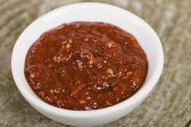

Gochujang Tomatillo Salsa

This is a great salsa to make and it's easy to adjust the levels of spice based on your spice tolerance!
Ingredients
- 7 Tomatillos, halved and husks removed
- 5 cloves garlic, peeled
- 1 Jalepeño, halved and seeds removed
- 1/2 yellow onion
- 1/4 cup of fresh cilantro
- 3 scallions, trimmed
- 2 to 3 table spoons of gochujang, per desired spice level
- Juice of 2 limes
- 1 teaspoon of salt
- 1 teaspoon of pepper
Directions
- Preheat oven broiler. Place the tomatillos, garlic, jalapeño and onion on a baking sheet.
Place the baking sheet under the broiler, and cook until the tomatillos have charred slightly.
This should take about 10 minutes, but check occasionally to make sure the ingredients aren't completely burnt.
- Remove from the oven, and allow to cool.
Transfer to a food processor. Add the cilantro, scallions, gochujang, lime juice, salt and pepper.
- Pulse in the food processor until smooth.
Season with additional salt and pepper if needed.
This can be stored in an airtight container in the refrigerator for up to 1 week.